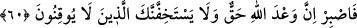
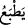
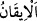
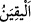

kalbine nüfuz etmesine mânidir. Sonra tab‘ bu hal için istiâre olarak kullanılmış,
ardından da “ fiili ondan türetilmiştir. Dolayısıyla istiâre-i tebeiyye olur.
60. (Rasûlüm!) Sen şimdi sabret. Bil ki Allâh’ın vâdi gerçektir. (Buna) iyice
inanmamış olanlar, sakın seni gevşekliğe sevketmesin!
Ey Muhammed! “Sen şimdi” onların söz ve fiil olarak yaptıkları eziyetlere “sabret.
Bil ki Allâh’ın” sana yardım ve dinini üstün kılma “vaadi gerçektir.” Mutlaka onu
yerine getirecek ve sözünde duracaktır. İşlerin, amellerin zamanını kollayın, çünkü her
işin bir vakti vardır.
“(Buna) iyice inanmamış olanlar,” yâni âyetleri yalanlamaları ve bâtıl sözleriyle
eziyet vermeleri sebebiyle -ki “Siz ancak bâtıl şeyler ortaya atmaktasınız.” (58. âyet)
şeklindeki sözleri de bu cümledendir- âyetlere iyice inanmamış olanlar “sakın seni”
üzüntüye kapılarak “gevşekliğe” ve endişeye “sevketmesin!” el-Müfredât’ta der ki:
“Onların ortaya attıkları şüpheler seni rahatsız etmesin ve îtikadından kaydırmasın.”
Çünkü onlar şüphe içerisinde ve dalâlettedirler. Onlardan bunların benzerlerinden
başkası beklenmez.
“ şüphesiz olmak demektir. Yakîn kelimesi, saf su anlamındaki “
kelimesinden alınmıştır. Nitekim Keşfü’l-esrâr’da böyle geçmektedir.
Bu nazm-ı kerîmin zâhiri, kâfirleri Rasûlullah (s.a.)’i gevşetmekten nehiy olsa da
aslında kinâye yoluyla O’nu onların gevşetmeye çalışmalarından etkilenmekten nehiydir.
Rivâyet edilir ki Hz. Peygamber (s.a.)’in amcası Ebû Talib ölünce Kureyş eziyette
ileri gitti. Hattâ Kureyş’ten bazı sefihler O’nun şerefli başına toprak saçtı. Kızlarından
birisi yanına vararak toprağı O’nun başından temizlemeye ve ağlamaya başladı.
Rasûlullah (s.a.) ise ona: “Kızcağızım, ağlama! Allah babanı korur”[56] buyuruyordu.
Kezâ ashâbın tamamı da eziyet gördüler ve sabrettiler. Sonunda da muradlarına
ulaştılar. Din, dünyâ ve âhiret devleti onların oldu.
Hâfız der ki:
Ey gönül, âşıklıkta sâbit kadem ol;
Çünkü bu yolda ücreti verilmeyen iş yoktur
et-Te’vîlâtü’n-Necmiyye’de der ki: “Sen şimdi sabret.” sözüyle, sâdık tâlibe işâret
etmektedir. Yâni nefsi tezkiye etmek için onu ülfet ettiği şeylerden kesip ayırmanın
zorluklarına göğüs germe, kalbi tasfiye etmek için onu nefsin sıfatlarıyla kirlenmekten
murâkabe etme ve ruhu tahliye (hâ ile) etmek için cûda/cömertliğe ulaşmak maksadıyla
vücûdu/varlığı bezl husûsunda ona yardım konusunda sabırlı ol. “Bil ki” “Dikkat edin!